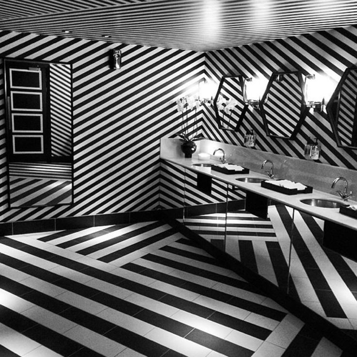

Just over a hundred years ago, Victorian plumber Thomas Crapper invented the modern-day toilet. We’ve tracked down London’s best and most eccentric thrones take a look
10. China Tang at The Dorchester
Take a right turn at the bottom of the stairs and wander into equally decadent washroom facilities where you can relieve yourself in a number of spacious private cubicles while listening to a genteel recital of Coleridge’s Rime of the Ancient Mariner.
9. The Hunter
If you’re a man who’s ever fantasised about urinating in a woman’s mouth but have yet to find a willing participant, the ruby red lip-shaped urinals at The Hunter S are just the place for you. Oh — and if that wasn’t enough, distract yourself with the vintage pornography that adorns the toilet walls.
8. City Social
On the north side of the Thames, in the iconic skyscraper Tower 42, City Social offers a different viewpoint of London from the capital's financial district.
7. Quaglino's

Check out the toilets, which are done head to toe in black and white stripes
6. Crazy Bear
The toilets in this chain of Thai restaurants are dizzyingly bling. With mirrored walls and doors all around, Crazy Bear has the best bathrooms for a multi-angle beard check.
5. Nopi
Another maze of mirrors, the folks at Ottolenghi have been forced to put up signs directing lavatory-users back to the restaurant.
4.The Alchemist
A good restaurant loo is, more often than not, a solid indicator of how successful the operation is as a whole.
3. Sketch
With incredible vintage-style rooms, this converted 18th-century venue is famous for having futuristic pod toilets where birdsong calms you while you sit.
2. Claridge’s
the best loo in a London hotel is in Claridge’s. Steeped in history, the elegant ladies’ room not only has vanity areas with chairs and mirrors, but also a coat check and attendant.
1. The Shard
Thirty-one floors up The Shard, Aqua's urinals could well have the best view from a toilet in Europe.